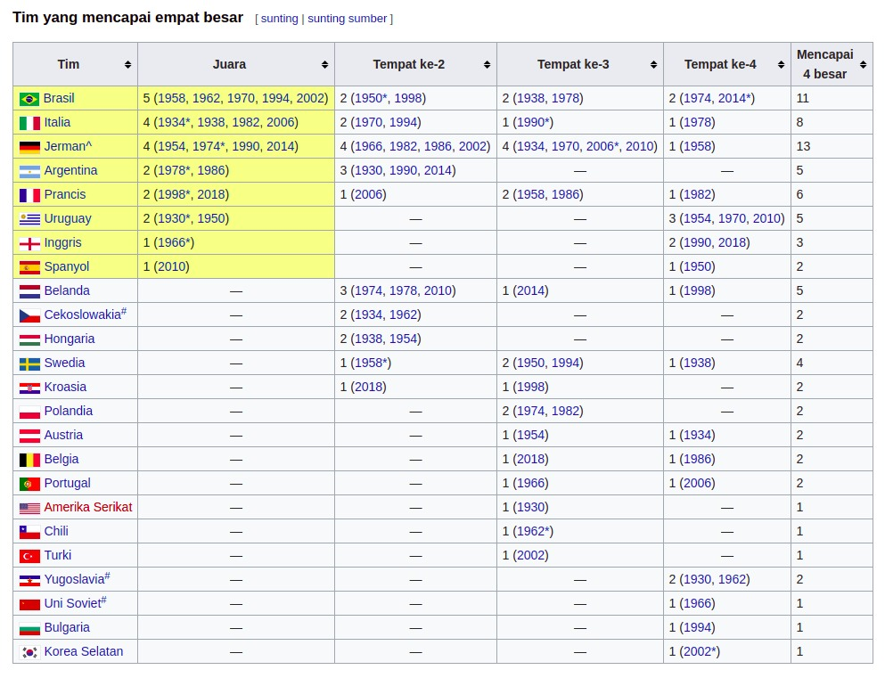

<h1> Biasa digunakan untuk judul utama
<h2> Biasa digunakan untuk subjudul level 1
<h3> Biasa digunakan untuk subjudul level 2
<h4> Biasa digunakan untuk subjudul level 3
dst.
<p> Digunakan untuk menunjukkan sebuah paragraf
<em> Digunakan untuk menunjukkan bagian kata yang perlu mendapatkan penekanan atau perhatian khusus
<strong> Digunakan untuk menunjukkan sebuah kata yang sangat penting atau mendesak
<q> Digunakan untuk menandai sebuah kutipan dalam sebuah teks
Unordered Lists digunakan untuk menampilkan daftar dan menampilkan bullet pada tiap item list nya.
<ul> untuk membuat daftar yang berjenis Unordered Lists
<li> untuk menuliskan item dari daftar tersebut
Ordered Lists digunakan untuk menampilkan daftar dan menampilkan nomor atau karakter lain pada tiap item list nya sebagai penanda urutan.
<ol> untuk membuat daftar yang berjenis Ordered Lists
<li> untuk menuliskan item dari daftar tersebut
Description Lists digunakan untuk menampilkan daftar dengan penjelasan pada masing-masing itemnya
<dl> untuk membuat daftar yang berjenis Description Lists
<dt> untuk mendefinisikan item pada daftar
<dd> untuk mendeskripsikan setiap item
<blockquote> Long Quotations, mengandung konten berupa sebuah kutipan.
<pre> Preformatted Text, digunakan untuk menampilkan teks sesuai dengan yang ditulis pada text editor. Sangat berguna dalam pengetikan puisi.
<figure> Figure, menentukan konten mandiri seperti ilustrasi, foto, daftar kode, dll. Elemen ini digunakan untuk mengelompokkan blok konten yang dapat dipindahkan posisinya dari blok utama sebuah dokumen tanpa mempengaruhi arti dari induk dokumen.
<figcaption> Digunakan untuk menuliskan sebuah caption (judul) atau keterangan.
<a> Anchor. Digunakan untuk membuat sebuah hyperlink ke halaman atau website lain, file, alamat email, atau URL lainnya. Elemen ini juga memerlukan atribut agar dapat bekerj dengan baik.
<cite> Citation, merupakan sebuah elemen yang digunakan untuk sebuah rujukan pada sebuah dokumen, contohnya pada sebuah buku, majalah, artikel, dan lainnya.
<dfn> Defining Terms, digunakan untuk mendefinisikan sebuah istilah. Elemen ini harus terletak pada elemen lain seperti <p> atau <section>, teks yang diberi markup <dfn> akan ditampilkan dengan huruf miring.
<sup> Superscript, elemen yang dapat membuat teks yang ditampilkan tampak kecil dengan posisi di atas teks biasanya.
<sub> Subscript, elemen yang dapat membuat teks yang ditampilkan tampak kecil dengan posisi di bawah teks biasanya.
<mark> Highlighted Text, digunakan untuk menandai atau menyoroti sebuah teks yang memiliki peran penting.
<br> Line Break, digunakan untuk memberitahu browser untuk memberikan sebuah garis baru pada sebuah teks.
Menginstruksikan browser untuk mengunduh pada URL yang ditetapkan daripada mengarahkannya.
href="/lokasi/media" download
Menetapkan target yang akan diarahkan/unduh ketika pengguna menekan hyperlink.
href="URL"
Menetapkan bahasa dari dokumen target.
href="URL" hreflang="kode_bahasa"
Menetapkan URL yang akan diberitahu dengan mengirimkan post request ping pada body oleh browser (berjalan di belakang layar) ketika target URL pada hyperlink ditekan. Biasanya atribut ini digunakan untuk pelacakan.
href="URL" ping="URL"
Menetapkan referensi untuk dikirim pada target.
href="URL" referrerpolicy="value"
Menetapkan hubungan antara halaman yang ditampilkan dengan target.
rel="value" href="URL"
Menetapkan lokasi ketika membuka target contohnya pada sebuah tab, window, atau tab itu sendiri.
href="URL" target="value"
Menetapkan tipe media yang digunakan pada target.
href="URL atau file" media="value"
Elemen <table> merepresentasikan data tabular, yaitu informasi yang disajikan dalam bentuk tabel. Tabel disajikan dalam dua dimensi terdiri dari baris dan kolom (cell) yang berisi data.

Tabel tersusun dari 3 elemen, yaitu <table>, <tr>, dan <td> atau <th>
Elemen <table> digunakan untuk menandakan dimulai dan diakhirinya sebuah konten tabel dan sebagai wadah untuk tabel itu sendiri.
Elemen <tr> digunakan untuk membuat sebuah baris baru yang didalamnya terdapat elemen <td> atau <th>
Elemen <td> berarti table data, selain membuat sel, elemen ini juga berfungsi sebagai tempat menampung data pada tabel.
Elemen <th> berarti table header, digunakan untuk menentukan sebuah headerpada kolom data.
Catatan: Gunakan atribut border untuk menampilkan garis pada tepi sel
Spanning Cell digunakan untuk menjangkau atau merentangkan sebuah ukuran sel lebih dari biasanya (dalam microsoft word lebih dikenal sebagai merging cell).
Untuk merentangkan sebuah kolom (column spanning) kita bisa menggunakan atribut colspan pada elemen <td> atau <th>.
Untuk merentangkan sebuah baris (row spanning) kita bisa menggunakan atribut rowspan pada elemen <td> atau <th>.
| Elemen atau Atribut | Deskripsi | Cara Penggunaan |
|---|---|---|
| <table> | Menetapkan elemen tabel. | <table> </table> |
| <td> | Menetapkan sebuah sel dalam baris tabel. | <td> </td> |
| colspan="number" | Jumlah kolom yang dicakup oleh sel. | <td colspan="number"> </td> |
| rowspan="number" | Jumlah baris yang dicakup oleh sel. | <td rowspan="number"> </td> |
| headers="nama_header" | Mengasosiasikan data sel dengan header. | <td headers="nama_header"> </td> |
| <th> | Menetapkan header yang terkait dengan baris atau kolom. | <th> </th> |
| colspan="number" | Jumlah kolom yang dicakup oleh header. | <td colspan="number"> </td> |
| rowspan="number" | Jumlah baris yang dicakup oleh header. | <td rowspan="number"> </td> |
| headers="nama_header" | Mengasosiasikan header dengan header lainnya. | <td headers="nama_header"> </td> |
| scope="row|col|rowgroup|colgroup| | Mengasosiasikan header dengan baris, kelompok baris, kolom, atau kelompok kolom. | <td scope="row"> </th> |
| <tr> | Menetapkan sebuah baris pada tabel | <tr> </tr> |
| <caption> | Memberikan judul pada sebuah tabel | <caption> </caption> |
| <col> | Menetapkan sebuah kolom | <col> |
| <colgroup> | Menetapkan sebuah kelompok kolom | <colgroup> </colgroup> |
| <tbody> | Mengidentifikasi sebuah body dalam tabel | <tbody> </tbody> |
| <tfoot> | Mengidentifikasi sebuah footer dalam tabel | <tfoot> </tfoot> |
| <thead> | Mengidentifikasi sebuah header dalam tabel | <thead> </thead> |
| Elemen Dasar Tabel | Atribut <td> |
|---|---|
<table>
<tr>
<th>Header</th>
</tr>
<tr>
<td>data</td>
<td>yang</td>
<td>dijadikan</td>
<td>tabel</td>
</tr>
</table>
|
<table>
<tr>
<td colspan="number">colspan</td>
<td rowspan="number">rowspan</td>
<td headers="nama_header">header</td>
</tr>
</table>
|
| Atribut <th> | |
<table>
<tr>
<th colspan="number">colspan</td>
<th rowspan="number">rowspan</td>
<th headers="nama_header">header</td>
<th scope="row|col|rowgroup|colgroup">scope</th>
</tr>
</table>
|
Elemen <input> merupakan elemen yang sangat sering dipakai untuk mendapatkan data dari user. Elemen input memiliki banyak tipe, selengkapnya bisa dilihat pada tabel berikut:
| Input Type | Deskripsi | Cara Penggunaan |
|---|---|---|
| <input type="text"> | Input teks yang berisi satu baris. Tipe default dari inpu elemen. | <input type="text"> </input> |
| <input type="number"> | Input teks yang hanya mengizinkan format angka. | <input type="number"> </input> |
| <input type="password"> | Sama seperti input text, namun setiap karakter akan ditampilkan sebagai bintang. | <input type="password"> </input> |
| <input type="email"> | Sama seperti teks biasa, namun dikhususkan untuk format email. | <input type="email"> </input> |
| <input type="search"> | Input untuk melakukan pencarian berdasarkan kata kunci. | <input type="search"> </input> |
| <input type="date"> | Input untuk mengambil data tanggal. Tipe ini akan menyediakan popup penanaggalan untuk memudahkan pengisian. | <input type="date"> </input> |
| <input type="time"> | Menentukan waktu yang ingin user isi. Tipe ini juga akan menampilkan visual dari jam. | <input type="time"> </input> |
| <input type="datetime-local"> | Sama seperti tipe date, tetapi ia menambahkan data waktu. | <input type=""> </input> |
| <input type="checkbox"> | Sebuah kotak yang dapat dicek untuk active dan non active | <input type="checkbox"> </input> |
| <input type="radio"> | Pada umumnya, tipe ini digunakan untuk melakukan pemilihan dari sekian opsi radio button yang ada. Input ini akan dikelompokkan dalam sebuah radio group. | <input type="radio"> </input> |
| <input type="range"> | Menentukan nilai angka berdasarkan jangkauan nilai yang ditentukan. User tidak akan bisa mengambil nilai diluar yang ditentukan. | <input type="range"> </input> |
| <input type="color"> | User dapat menentukan warna dengan tipe ini baik menggunakan color picker atau memasukkan format nilai warna secara manual. | <input type="color"> </input> |
| <input type="file"> | Melakukan input satu atau lebih berkas dari penyimpanan data perangkatnya. | <input type="file"> </input> |
| <input type="submit"> | Input yang di render sebagai tombol submit | <input type="submit"> </input> |
| <input type="hidden"> | Biasanya, tipe ini tidak terlihat oleh user. Namun, input ini akan sangat berguna bagi developer untuk memasukkan suatu data. | <input type="hidden"> </input> |
Catatan: Elemen <form> berfungsi sebagai wrapper/pembungkus dari keseluruhan kolom input atau formulir.
Non-Single Line Input Element biasanya dibutuhkan pada beberapa kasus, seperti membuat komentar, catatan, deskripsi, dsb.
Output (hasil) dari input jenis ini hanya akan memberikan teks dalam satu baris saja.
Catatan: Atribut value berfungsi untuk memberikan nilai default pada elemen input.
HTML memiliki elemen khusus yang memungkinkan user menuliskan teks dalam banyak baris. Elemen <textarea> berbeda dengan elemen input sebelumnya. Selain nama elemen yang berbeda, elemen ini memiliki tag penutup agar dapat berfungsi dengan baik.
Pembuatan elemen input dan elemen lainnya seperti textarea perlu disandingkan dengan elemen label untuk memberikan keterangan atau caption pada masing-masing elemen input.
Lalu kita perlu memberikan value yang sama pada kedua atribut id dan for. Dengan cara ini, elemen label akan berasosiasi dengan elemen input dan kita akan mendapatkan dua keuntungan di atas.
Atribut yang sering digunakan adalah atribut placeholder untuk memberikan contoh atau referensi data sebagai panduan user saat mengisi data dan atribut required yang menandakan bahwa elemen input tersebut wajib diisi.
Catatan: Elemen label tidak dapat digantikan oleh atribut placeholder karena keduanya memiliki peranan sendiri dalam membuat formulir.
| Atribut | Tipe | Deskripsi | Cara Penggunaan | Contoh |
|---|---|---|---|---|
| name | semua | Menamai elemen input. Atribut ini memiliki peran yang sangat penting. Jika tidak menyertakannya, data input tidak akan dikirim ke server. | <input type="text" name="nama_elemen"> | |
| placeholder | text, search, url, tel, email, password, number | Teks samar yang muncul pada kolom input, biasanya digunakan sebagai petunjuk atau contoh data yang perlu diisi. | <input type="email" placeholder="email@example.com"> | |
| required | semua tipe kecuali hidden, range, color, dan button | Atribut ini menyebabkan elemen input wajib diisi untuk di submit. | <input type="password" required> | |
| value | semua tipe kecuali image | Memberikan data awal atau default pada elemen <input> | <input type="text" value="teks"> | |
| autocomplete | semua tipe kecuali checkbox, radio, dan button | Melengkapi input secara otomatis. Biasanya terjadi ketika kita pernah meng-input sesuatu dan pada kesempatan berikutnya data tersebut akan ditampilkan lagi oleh browser sebagai autocomplete. | <input type="email" autocomplete="data"> | |
| maxlength | text, search, url, tel, email, password | Menentukan maximal panjang karakter yang diperbolehkan pada kolom input. | <input type="tel" maxlength="number"> | |
| max | date, month, week, time, datetime-local, number, range | Menentukan maksimal nilai yang diperbolehkan. | <input type="date" max="number|date"> | |
| minlength | text, search, url, tel, email, password | Menentukan minimal panjang karakter yang diperbolehkan pada kolom input. | <input type="tel" minlength="number"> | |
| min | date, month, week, time, datetime-local, number, range | Menentukan minimal nilai yang diperbolehkan. | <input type="date" min="number|date"> | |
| checked | checkbox, radio | Mengaktifkan atau mencentangkan input checkbox. | <input type="checkbox" checked> | |
| accept | file | Panduan atau batasan format berkas apa yang diperbolehkan pada input berkas. | <input type="file" accept="file_extension"> | |
| multiple | email, file | Memungkinkan pemilihan ganda pada elemen input. | <input type="file" multiple> | |
| pattern | text, search, url, tel, email, password | Menenetukan pola yang wajib dipatuhi pada dara yang diisi agar dapat valid. | <input type="password" pattern="> | |
| readonly | semua tipe kecuali hidden, range. color, checkbox, radio, dan button | Tidak memiliki akses edit nilai. | <input type="text" readonly> | |
| disabled | semua tipe | Memberikan efek tidak aktif pada elemen input. | <input type="text" disabled> |
Atribut action akan menentukan alamat tujuan dari pengiriman data. Kita bisa memberikan URL yang relatif atau absolut.
Atribut Method akan menentukan cara data dikirimkan ke server. Ada dua metode yang bisa digunakan untuk mengirimkan data pada formulir HTML, yaitu GET dan POST.
Biasanya metode ini digunakan untuk mendapatkan data dari server.
Metode POST merupakan metode untuk mengirimkan data dari browser ke server.
Beberapa karakter seperti copyright (©), lebih kecil (<), lebih besar (>), dan lainnya tidak dapat ditampilkan langsung sebagai konten HTML. Untuk menampilkan karakter terebut diperlukan kode khusus seperti yang tertera di bawah:
| Karakter | Deskripsi | Named Entity | Numeric Entity |
|---|---|---|---|
| non-breaking space | |   | |
| & | Ampersand | & | & |
| ' | Apostrophe | ' | ' |
| < | Kurang dari | < | < |
| > | Lebih dari | > | > |
| © | Hak cipta | © | © |
| ® | Merek dagang terdaftar | ® | ® |
| ™ | Merek dagang | &trade | ™ |
| £ | Pound | &Pound; | £ |
| ¥ | Yen | ¥ | ¥ |
| € | Euro | € | € |
| – | En-dash | – | – |
| — | Em-dash | — | — |
| ‘ | Kutip tunggal kiri | ‘ | ‘ |
| ’ | Kutip tunggal kanan | ’ | ’ |
| “ | Kutip ganda kiri | “ | “ |
| ” | Kutip ganda kanan | ” | ” |
| • | Bullet | • | • |
| … | Horizontal ellipsis | … | … |